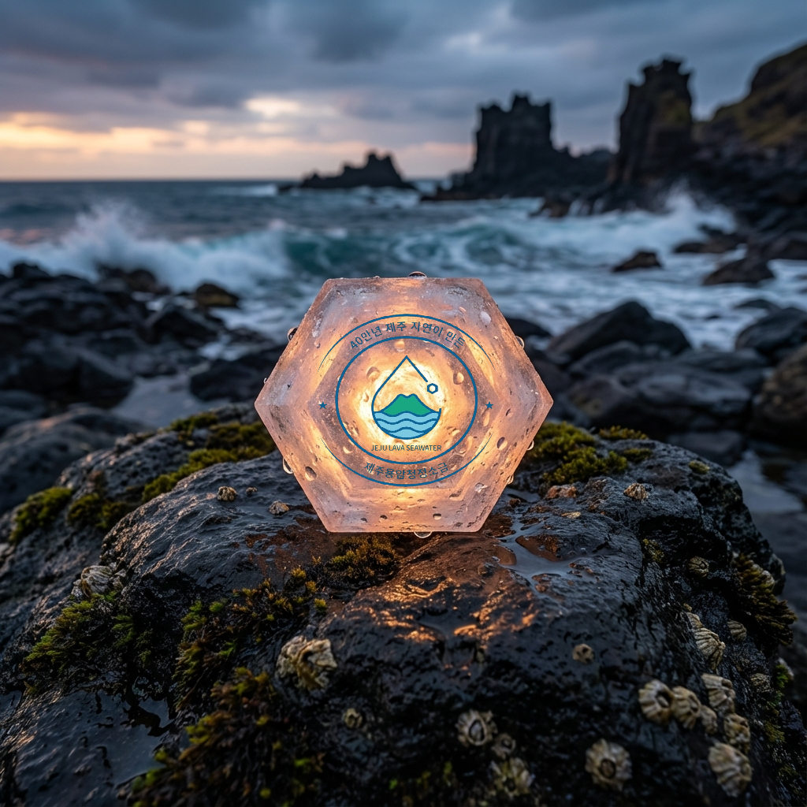
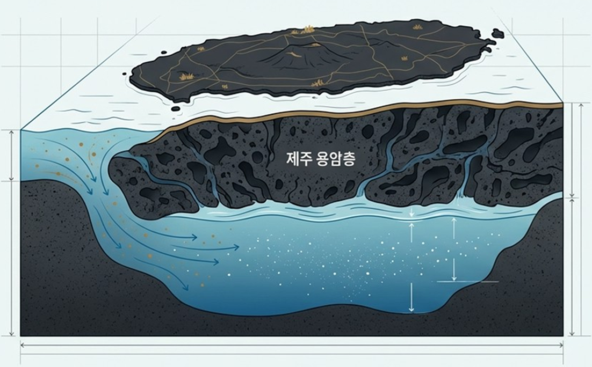
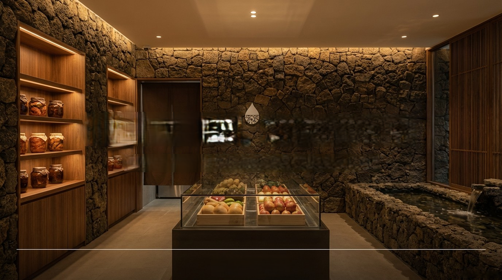
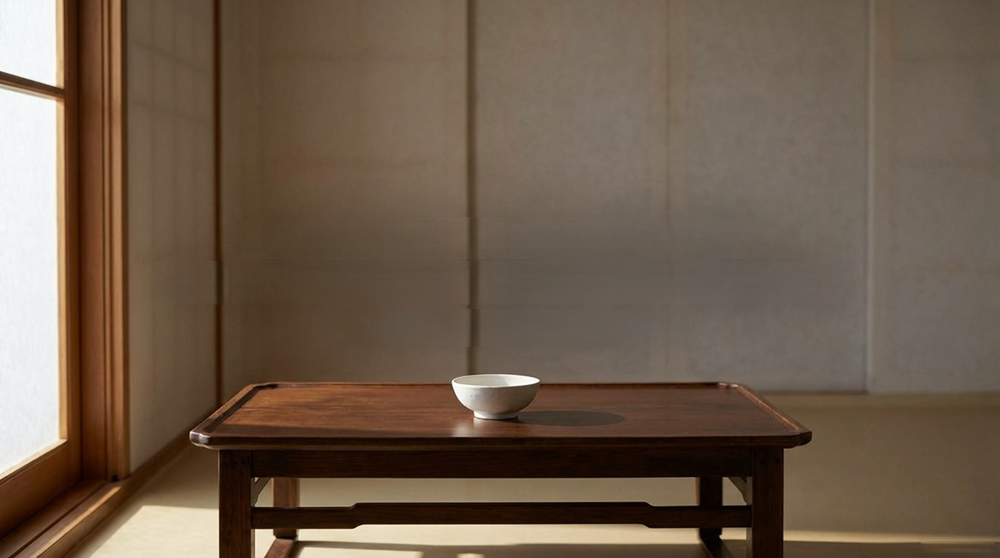

미담은 단순한 식품 브랜드가 아닙니다.
우리는 매일 식탁에서 시작되는 맛의 철학을 만드는 기업입니다.
40만 년 전, 제주의 용암암반이 만들어졌습니다. 그 암반을 통과한 해수는 자연의 완벽한 여과 시스템을 거쳐, 중금속과 미세플라스틱 없이 정제되었습니다.
바로 이 용암해수에서 나온 소금이 미담입니다. 단순한 짠맛이 아닌, 마그네슘, 칼슘, 칼륨이 자연스러운 황금비율로 어우러진 미네랄의 결정체.


화려한 마케팅과 연예인 모델 대신, 정직한 재료와 과학적 논리를 선택합니다.
산지의 이름이 아닌, 미네랄이라는 본질에 집중합니다. 그것이 진정한 맛입니다.
지상 노출 없이 암반을 통해 여과된 용암해수. 완벽하게 격리된 순수함입니다.
미담은 설득하지 않습니다. 우리는 화려한 수식어와 연예인 모델 대신, 정직한 재료와 과학적 논리를 전합니다.
Quality
100% 제주 용암해수
Purity
0% 미세플라스틱
Heritage
400,000년의 자연 여과

Years of Research & Development
Commitment to Quality
Natural Mineral Balance